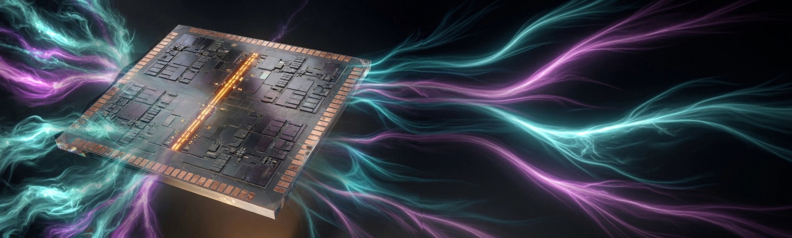

v3.0 · Xilinx 7-series backend
One binary. The whole FPGA flow. Two device families.
Helion is an FPGA CAD suite, not a vendor-tool wrapper. Write
SystemVerilog or VHDL, run one command, and get a placed, routed,
timing-closed bitstream for the HL10T die or Xilinx 7-series parts.
Deterministic, fail-loud, and measured.
Empty-XDC counter.sv gold is WNS_PS=9640.
Download 3.0.0 Use Helion Roadmap
The IDE
Physical View 2.0, schematic level-of-detail, waveform viewer, cross-probing, Tcl console, QoR suggestions. Every pixel below is the real app.


What it does
SystemVerilog / VHDL-2008 frontend, AIG synthesis with ABC-style rewriting, LUT6/FF/DSP/BRAM packing, simulated-annealing placement, PathFinder routing, graph STA with WNS/TNS and hold checks.
xc7a35t device model from open bitstream databases. Pack, place, route, FASM emission, frames-to-bitstream, all in Rust, zero vendor tools. FASM output byte-identical to prjxray's encoder.
SAT-based combinational equivalence checking, SystemVerilog assertions (immediate and concurrent), and clock-domain-crossing structural analysis with 11 violation classes, all in the IDE.
Physical View 2.0 with congestion and timing heat maps, design runs with strategy sweep, checkpoints, testbench runner, constraints wizard, VCD-driven power, integrated logic analyzer.
Why Helion
- One binary, whole flow.
helion implement design.prjruns synthesis → packing → placement → PathFinder routing → STA → bitstream. No toolchain stitching. - Deterministic. Same RTL in, same bits out. The QoR gate fails the build if LUT counts, WNS, or bitstream bytes move without a reason recorded in the same commit.
- Fail-loud. Over-capacity designs error instead of emitting a clipped bitstream; congested routing is refused, never silently clipped.
- Measured, not claimed. Every number on this page traces to the benchmark report or a pushed commit.
- Multi-vendor by design.
NetlistIRplus aBackendtrait. HL10T and Xilinx 7-series are the first two backends, not the only ones.
CAD pipeline
Each step is a crate. Tcl Session commands drive the same engines the CLI uses.
| Step | Crate | What it does |
|---|---|---|
| synth | helion-sv | sv-parser + AIG + FlowMap LUT6 |
| vhdl | helion-vhdl | VHDL-2008 elaborator, same LUT/FF path as SV |
| hls | helion-hls | C subset scheduled onto LUT / FF / DSP |
| pack | helion-pack | LUTFF + IOB + MAC27 + BRAM18 |
| place | helion-place | timing-driven vs wirelength, BLE overflow |
| route | helion-route | PathFinder A* with hop delay in the cost |
| sta | helion-sta | XDC clocks / I-O delay / false path, WNS + hold |
| drc | helion-drc | occupancy, unrouted IO, clocks |
| bits | helion-bits | FeatureMap frames + sparse .hbits |
| xilinx | helion-xilinx7 | pack → place → route → FASM → frames → .bit for xc7a35t |
| sim | helion-fabric / helion-sim | 6-input IMUX LUT + FF + IOB; event kernel agrees |
| hw | helion-hw | IEEE 1149.1 TAP, sim cable, partial program |
| IDE | helion-gui | helion-ide paints the Session; does not reimplement CAD |
Gold on HL10T-C32-1 (10.000 ns clock)
Measured by helion qor. A LUT, WNS, bitstream-size, or wall-time
regression fails the build until the table is updated in the same commit with a reason.
| Design | LUTFF | WNS_PS | .hbits B |
|---|---|---|---|
blinky.sv | 1 | 9700 | 153 |
counter.sv | 4 | 9640 | 185 |
hier.sv | 1 | 9700 | 153 |
Each gold design uses 1 IOB. Gold waveform:
helion run examples/counter.sv --cycles 16
prints LED[16]=0000000111111110 (LED = cnt[3]), identical in
the fabric model and the event simulator. Headless IDE gate:
helion-ide --headless examples/counter.sv prints
WNS_PS=9640.
Get it
GitHub Releases publish Helion.app (Apple Silicon),
a darwin-arm64 tarball with CLI + IDE + HAD + examples, a Linux x86_64
tarball (CLI + headless IDE), and SHA256SUMS.txt.
The app is ad-hoc signed; on first launch clear the quarantine flag once
with xattr -cr /Applications/Helion.app.
git clone https://github.com/helion-fpga/helion.git
cd helion
cargo test --workspace
cargo run -p helion-cli -- doctor
cargo run -p helion-cli -- run examples/counter.sv --cycles 16
cargo run -p helion-gui --bin helion-ide -- --headless examples/counter.sv